سلسلات أسئلة العربة
37 نصيحة بالصورة والشرح.

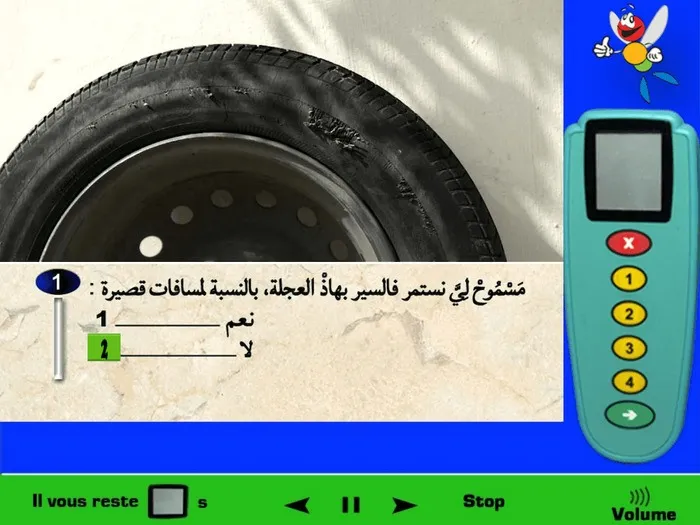
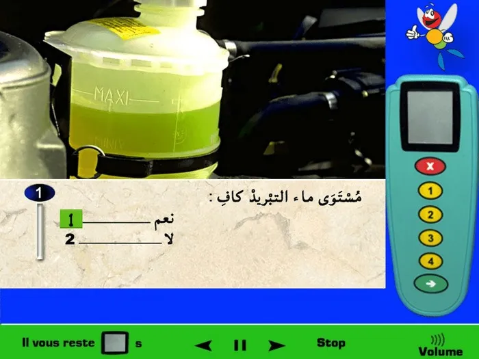
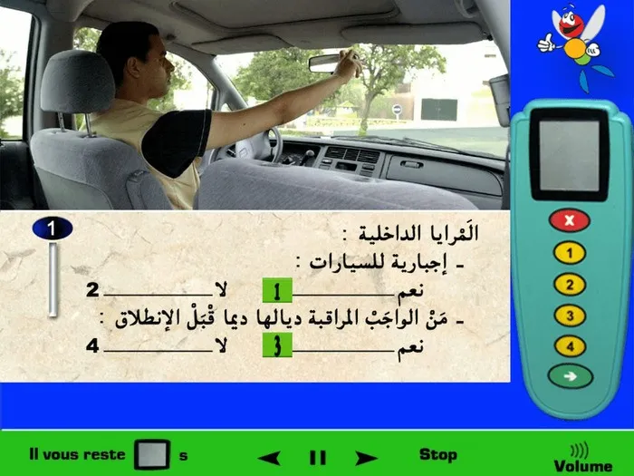
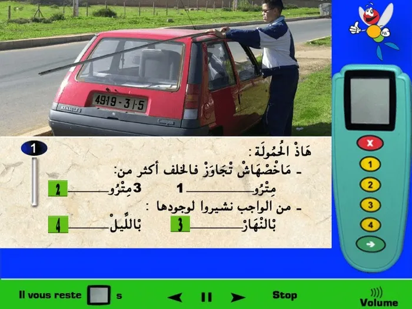
![بما أن رخصة السيّاقة من نوع باء (B) تسمح لي بقيادة عربة لا يتجاوز وزنها مع الحمولة 3500 كلغ إذن يُمْكنني من سياقة هذه الشاحنة وأن أتوفَّر على شهادة التأمين لأنها وثيقة ضرورية لكي أستطيع قيادة أي عربة (بجانب رخصة السّياقة، البطاقة الرّمادية، الضريبة السّنوية والفحص التقني) بالنسبة للضريبة على المحور فيجب أن أتوفّر عليها عندما يكون وزن الشاحنة مع الحمولة أكثر من 3000 كلغ، وبما أن في هذه الحالة هذه الشاحنة مجموع وزنها مع الحمولة فهي 2500 كلغ إذن لا يجب أن أتوفّر على ضريبة المحور. (إذا كانت العربة أقل من 3000 كلغ وأكثر من 1999 كلغ. في هذه الحالة يجب أن أتوفّر على ضريبة الحمولة).](../media/tips/09/06.webp)
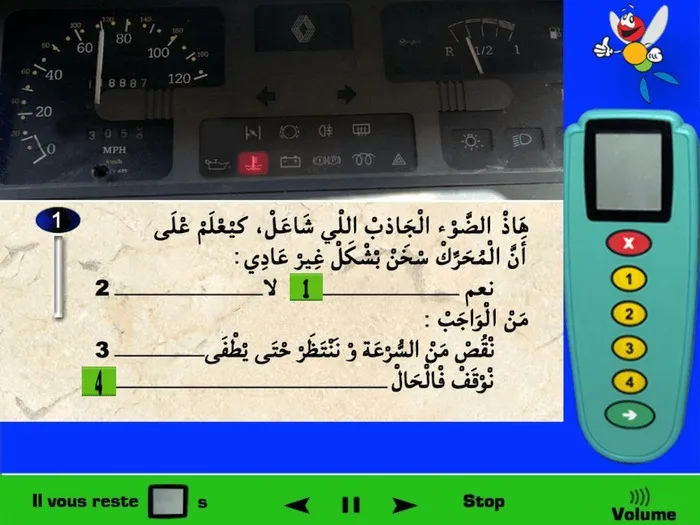
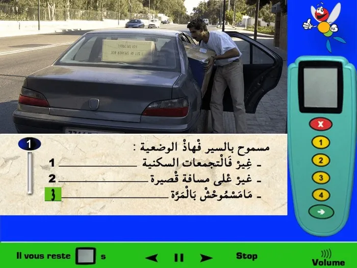
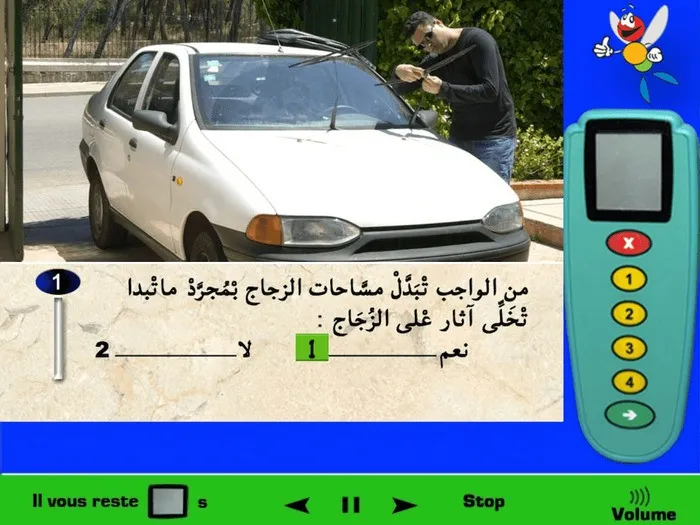
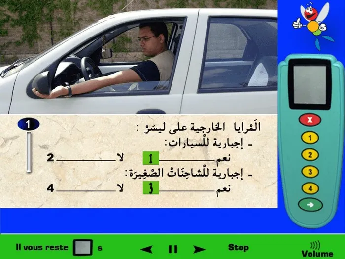
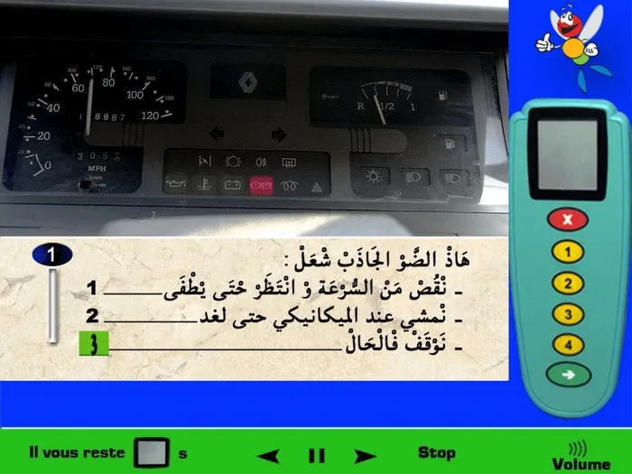
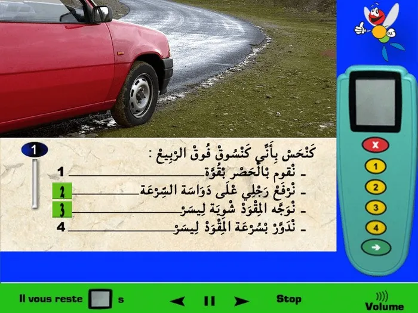
![الدُخّان الكثير الذي يخْرج من جهاز انفلات الغازات (chagma) فهو يُشير إلى السائق لا يستعمل بشكل جيّد مستوى السرعة للمحرك (vitesse) (يعني مثلا يجب عليه أن يستعمل المستوى الثالث من السرعة وهو يستعمل فقط المستوى الأول أو الثاني ويبدأ في الضغط بقوة على دواسة السرعة) وهذا سوف يُسبب في خروج الدخان من جهاز انفلات الغازات (chagma). أيظا يوجد سبب اخر وهو يمكن أن يكون هنالك إفراط في إستهلاك الزيت الخاص بالسيّارة يعني أن السيّارة تستهلك الزيت بصورة مفرطة وكثيرة. )لا يوجد علاقة بين البطارية فارغة والدخان الذي يخرج من جهاز انفلات الغازات (chagma).](../media/tips/09/13.webp)
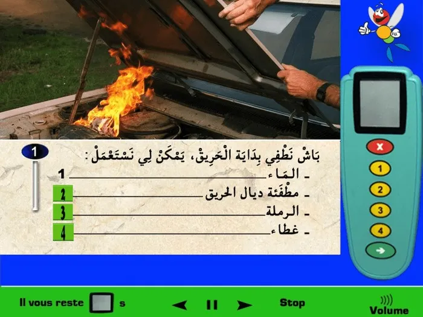
![لكي أقوم بفحص العجلات فمن الواجب عليّ أن أفحص الضغط الهوائي للعجلات (هل منخفض أم مرتفع، لو كان منخفض فأقوم بزيادته ولو كان مرتفع فأقوم بِخَفضِه). أقوم كذلك بفحص جوانب الإطار المطاطي يعني أقوم بفحص جوانب العجلة هل هي مُمًزَّقة أو عالق بها شيئ ما أو .. إلخ. وهذه العملية أقوم بها فقط بالعَينين، يعني فقط ألاحظ هل هنالك شيئ ما في العجلة أم أن كل شيئ جيّد. وأقوم كذلك بفحص مستوى التآكل يعني أقوم بفحص المستوى الدّنيوي للنّقوش والذي هو 1,6 مليمتر وهل العجلة مازالت جيّدة للاستعمال. (بِنْية العجلة فهي لا تتغير لذلك لا أقوم بفحصها، يعني لو كانت بِنية العجلة أي مقاسها هو 19، فسوف يبقى كما هو 19 ولا يتغيّر، لذلك لا أقوم بفحص هذا الجانب).](../media/tips/09/15.webp)
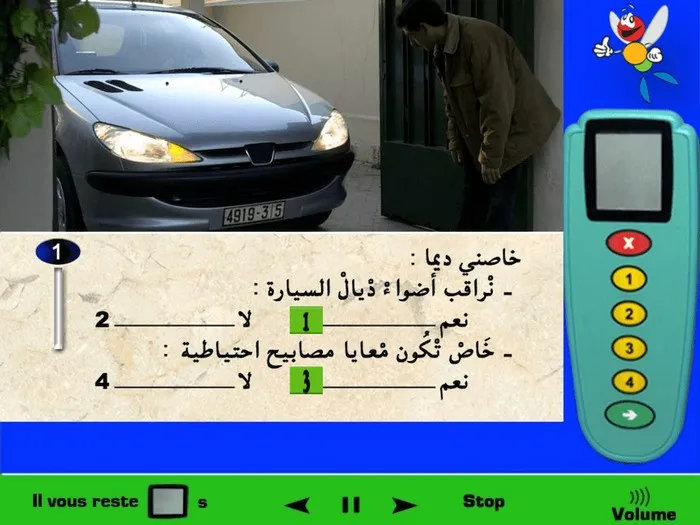
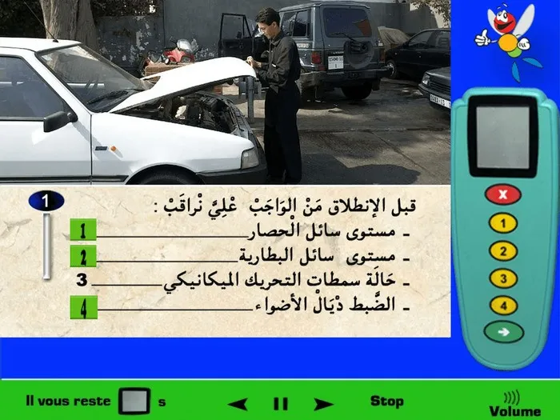
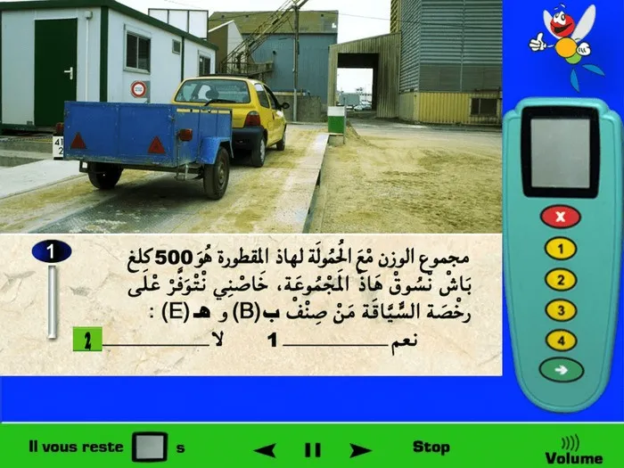
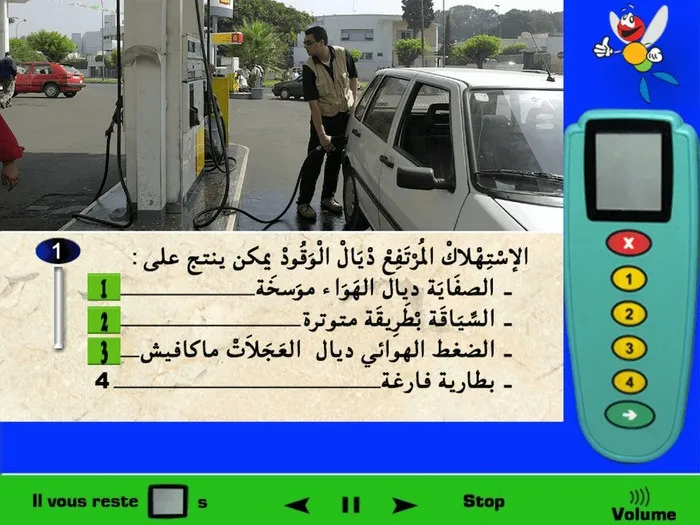
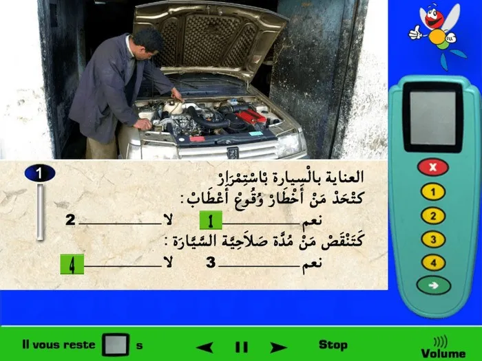
![السيارة تحتوي على محورين للعجلات، المحور الذي يوجد في أمام السّيارة والذي يحتوي على عجلتين، والمحور الثاني الذي يوجد في الخلف والذي يحتوي على عجلتين أيضا. في نفس المحور لا يمكن أن أستعمل عجلتين مختلفتين في البنية، مثلا لو كانت عَجَلَة واحدة مقاسها 18، فيجب أن أستعمل أيضا نفس المقاس في العجلة الثانية وليس أن أستعمل مقاس مختلف 19 أو 20 ... بالنسبة لاختلاف مَصْنَعْ العجلات (شَرِكة العجلات) فليست هنالك مشكلة في استعمال عجلات ذات مَصْنَعْ مختلف لأن الأهم هو استعمال عجلات بنفس البنية في نفس المحور الخاص بالعربة.](../media/tips/09/21.webp)
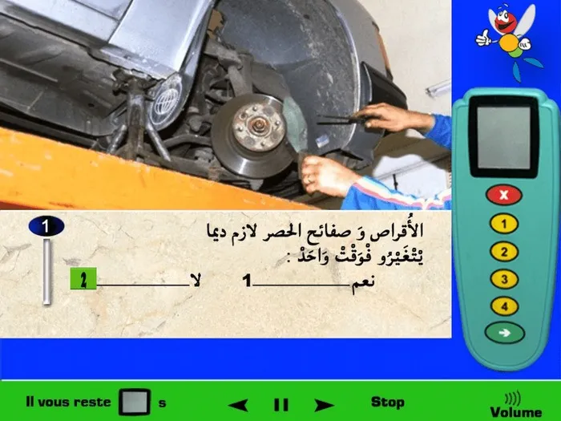
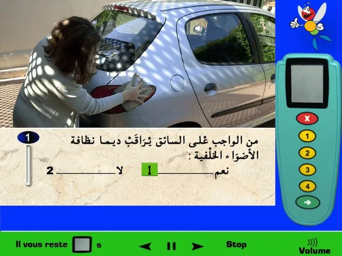
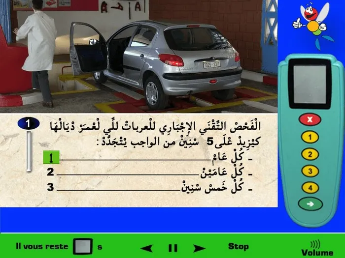
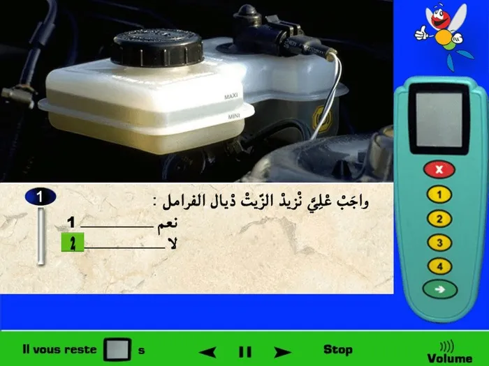
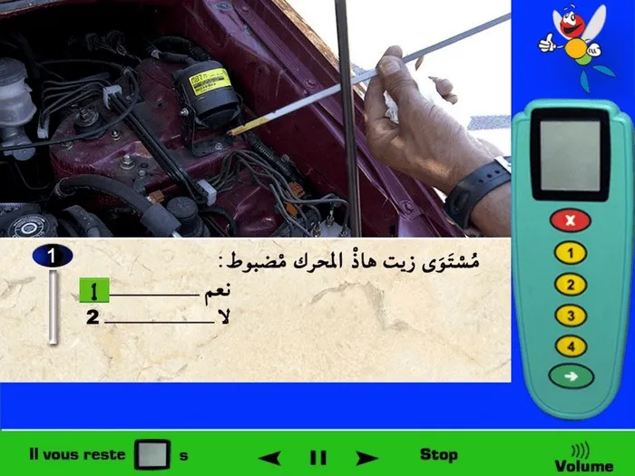
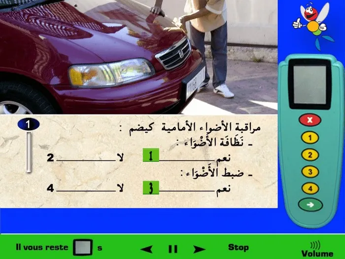
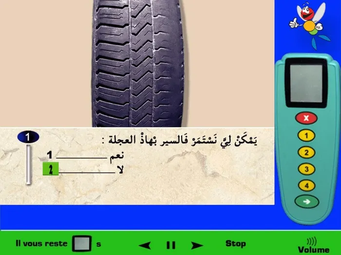
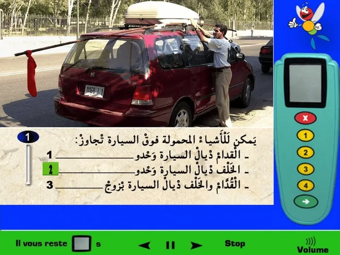
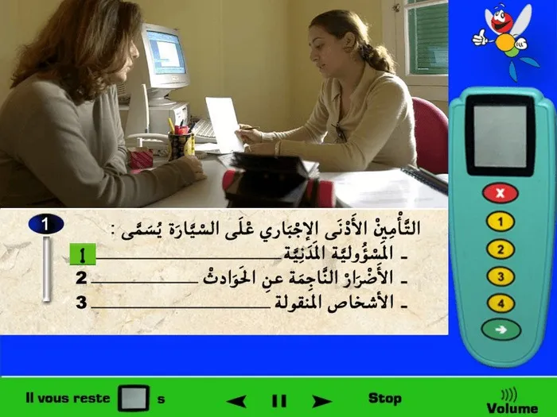
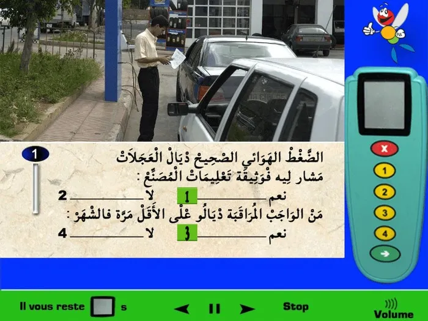
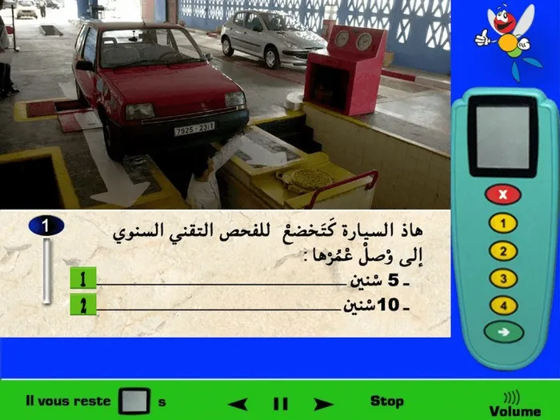
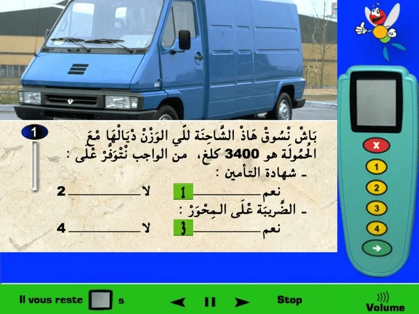
![إذا كان مستوى زيت الحصار (الفرامل) في الحد الأقصى الأسبوع الماضي وأصبح قرب مستوى MINI كما توضّح الصورة فهذا يدّل على أن هنالك إستهلاك مفرط وكبير لزيت الحصّار (الفرامل) ويوجد مشكل لأن إستهلاك زيت الحصّار كبير جدا. إذن في هذه الحالة بما أن هنالك مشكلة في أجهزة الحصر الخاصة بي فيجب عليّ أن أقوم بفحص المشكل الان عند أقرب مركز فحص. وليس عند الفحص القادم لأن المشكلة خطيرة خصوصا عندما يتعلق الأمر بالفرامل. لا يمكنني فقط إضافة سائل الفرامل والسّير لأن هذه الجملة في السؤال (أقوم بإضافة غير سائل خاص، فهي تعني هذا هو الحل فقط، لكن لا، يجب عليّ الان الذّهاب إلى مركز الفحص وليس زيادة فقط سائل خاص). الإجابة الصحيحة هي رقم 3.](../media/tips/09/34.webp)
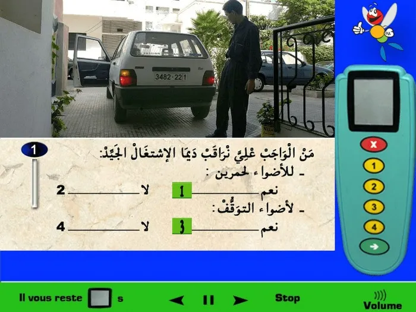
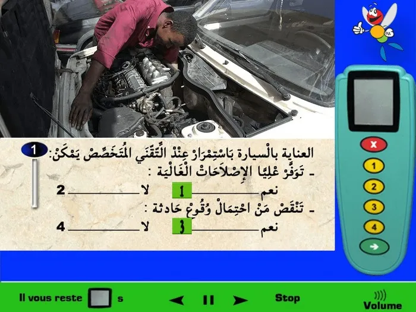
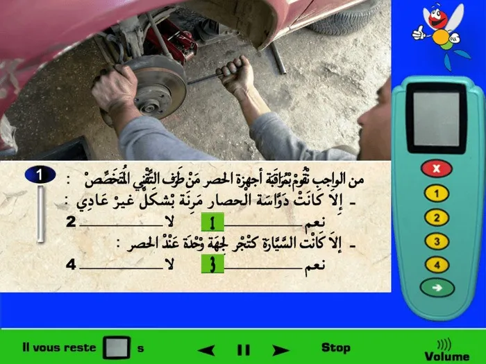